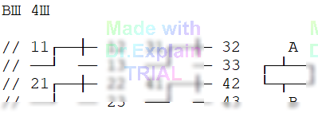

5.2 Макрос macro. Разработка типовых алгоритмов проверок
Когда устройство содержит множество одинаковых узлов (например, реле), не стоит дублировать один и тот же блок команд для каждого узла вручную. Вместо этого объявите параметризованный макрос и вызывайте его с нужными аргументами. Это делает программу контроля (ПК) компактной, наглядной и менее подверженной ошибкам.
Структура решения
- Определите составной тип точек узла через define (удобный «пакет» контактов).
- Свяжите группы контактов объекта контроля (ОК) с физическими входами АСК в команде РМ.
- Опишите макрос macro Имя(параметры) с телом в фигурных скобках: внутри — последовательность команд проверки, используя формальные аргументы.
- Вызывайте макрос короткими строками, подставляя реальные обозначения узлов и параметры (например, рабочее напряжение).
Пример: проверка однотипных реле РЭС22
ОК Пример * Проверка однотипных реле
define КонтРЭС22 [11-13,21-23,31-33,41-43,A,B]
РМ K1:КонтРЭС22==X1:1-12=1.1.1-12
K2:КонтРЭС22==X1:13-24=1.1.13-24

macro РЭС22(K,Uпит)
{ /* РЭС22 */
ВИ *3,Uпит,50мA,+A2,-B2*
ПТ *A2:K:A *B2:K:B*
ПР *K:11,K:13*K:12
*K:21,K:23*K:22
*K:31,K:33*K:32
*K:41,K:43*K:42*
ОТ *A2:K:A *B2:K:B*
ПР *K:11,K:12*K:13
*K:21,K:22*K:23
*K:31,K:32*K:33
*K:41,K:42*K:43*
} /* РЭС22 */
20 РЭС22(K1,24В)
30 РЭС22(K2,12В)
40 КЦ
Что делает пример
- define КонтРЭС22 … — описывает набор контактов типового реле (4 группы переключающих контактов + выводы катушки A,B).
- РМ — связывает логические имена K1, K2 с физическими точками (X1:… и внешними адресами).
- macro РЭС22(K,Uпит) — сценарий проверки: подать питание через ПИНТ (ВИ), подключить катушку (ПТ), проверить контактные состояния при поданном и снятом стимуле (ПР), отключить стимул (ОТ).
- Вызовы на метках 20 и 30 проверяют реле K1 при 24 В и реле K2 при 12 В.
Поведение препроцессора
При трансляции ПК препроцессор разворачивает define и macro. Оператор в окне «Программа» видит уже раскрытый текст: каждая строка вызова макроса заменяется полным набором соответствующих команд.
Правила и замечания
- В теле макроса нельзя задавать явные числовые метки строк (10, 20, …): при многократном раскрытии возникнут дубли и ошибки трансляции.
- Если нужны метки внутри макроса, используйте специальный макрос lab для относительных меток (см. разд. 13, п. 1.11).
- Параметры макроса могут передавать как логическое имя узла (K1, K2 и т.п.), так и значения настроек (напряжение питания, ток и др.).
Мини-шаблон
define ТипУзла [ ...список_контактов... ]
РМ U1:ТипУзла==... // отображение на входы АСК
...
macro ПроверкаУзла(U,Param)
{
// команды проверки, используют U:контакт и Param
}
NN ПроверкаУзла(U1,Value1)
NN ПроверкаУзла(U2,Value2)
...
КЦ